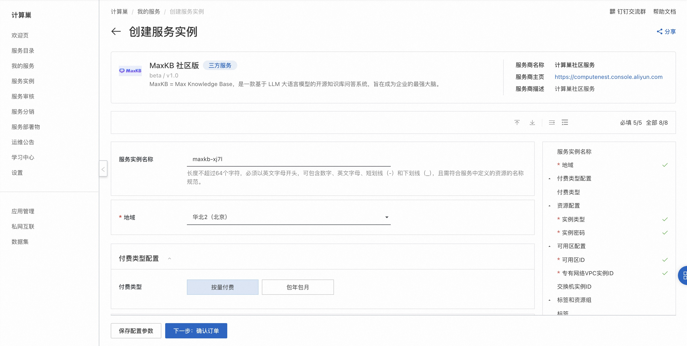
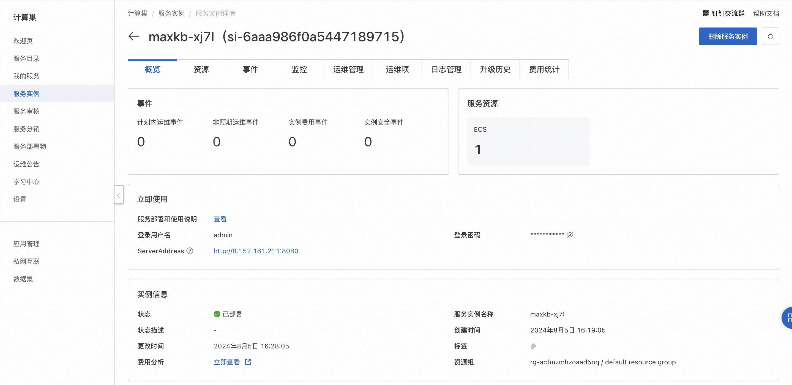

MaxKB 社区版快速部署
概述
MaxKB = Max Knowledge Base，是一款基于 LLM 大语言模型的开源知识库问答系统，旨在成为企业的最强大脑。详情请查看MaxKB官网。
- 开箱即用：支持直接上传文档、自动爬取在线文档，支持文本自动拆分、向量化、RAG（检索增强生成），智能问答交互体验好；
- 模型中立：支持对接各种大语言模型，包括本地私有大模型（Llama 3 / Qwen 2 等）、国内公共大模型（通义千问 / 智谱 AI / 百度千帆 / Kimi / DeepSeek 等）和国外公共大模型（OpenAI / Azure OpenAI / Gemini 等）；
- 灵活编排：内置强大的工作流引擎，支持编排 AI 工作过程，满足复杂业务场景下的需求；
- 无缝嵌入：支持零编码快速嵌入到第三方业务系统，让已有系统快速拥有智能问答能力，提高用户满意度。
计费说明
MaxKB 社区版上的费用主要涉及：
- 所选vCPU与内存规格
- 系统盘类型及容量
- 公网带宽
RAM账号所需权限
部署MaxKB 社区版，需要对部分阿里云资源进行访问和创建操作。因此您的账号需要包含如下资源的权限。 说明：当您的账号是RAM账号时，才需要添加此权限。
| 权限策略名称 | 备注 |
|---|---|
| AliyunECSFullAccess | 管理云服务器服务（ECS）的权限 |
| AliyunVPCFullAccess | 管理专有网络（VPC）的权限 |
| AliyunROSFullAccess | 管理资源编排服务（ROS）的权限 |
| AliyunComputeNestUserFullAccess | 管理计算巢服务（ComputeNest）的用户侧权限 |
部署流程
-
访问MaxKB 社区版服务部署链接，按提示填写部署参数： 
-
参数填写完成后可以看到对应询价明细，确认参数后点击下一步：确认订单。确认订单完成后同意服务协议并点击立即创建进入部署阶段。
- 等待部署完成后进入服务实例管理, 在控制台找到MaxKB服务访问链接。 
- 单击链接访问服务。

© 2009-2022 Aliyun.com 版权所有